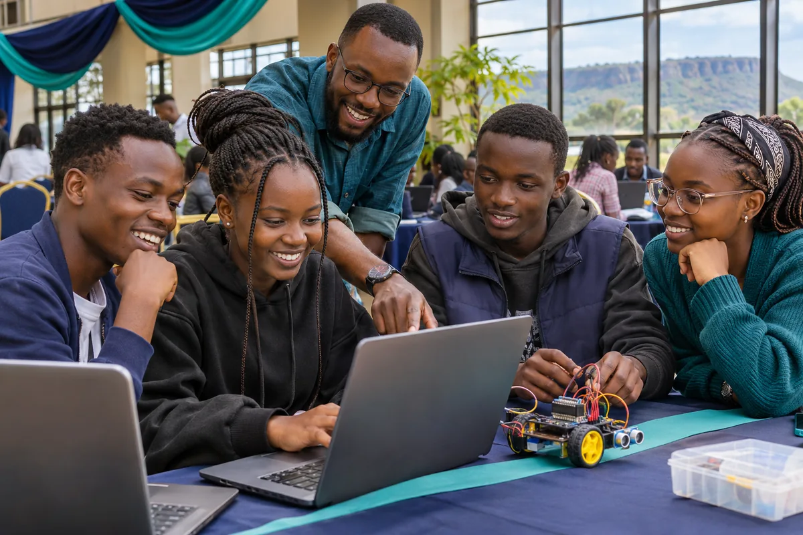

Nakuru Youth Tech Expo
Explore technology and career opportunities at our one-day youth expo.

Expo highlights
- Explore careers in technology.
- Build your first web page in a hands-on workshop.
- See youth projects and meet other attendees.
Explore technology and career opportunities at our one-day youth expo.
